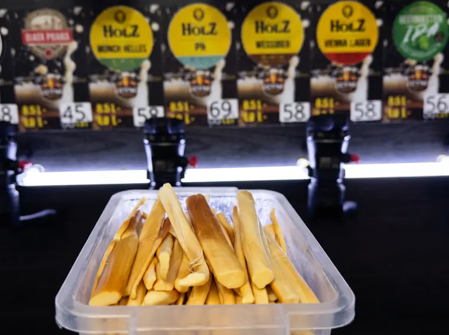

Munich Helles Lager · CHIȘINĂU
HOLZ Munich Helles
Produsă local lângă Chișinău de Keller Holz Privatbrauerei pe echipament german Caspary cu malț bavarez Weyermann, HOLZ Munich Helles este una dintre cele mai echilibrate beri blonde la draft din Moldova.

Fișă tehnică & profil de gust
- Origine
- Keller Holz Privatbrauerei · Budești, Chișinău (Moldova)
- Stil
- Munich Helles Lager
- Alcool / Amăreală
- 4,3–4,7% · 12 IBU
- Temperatură servire
- 4–6 °C
- Preț referință
- 58 MDL
Aromă: Aromă curată de malț proaspăt și pâine caldă, cu o notă fină, ierboasă de hamei nobil.
Gust: Gust catifelat, ușor dulceag de malț la început și un final sec, extrem de răcoritor, cu amăreală foarte blândă (12 IBU). O bere de sesiune ușor de băut în orice anotimp.
Cu ce gustări merge la GYM BEER: Merge ideal cu pește uscat sărat, peștișori crocanți, creveți sau raci fierți cu porumb — toate cântărite pe loc în vitrina GYM BEER.
Fișă de degustare, servire & asociere la GYM BEER
Unde pot cumpăra HOLZ Munich Helles la draft în Chișinău?
La GYM BEER Botanica (bd. Cuza-Vodă 1/4) și GYM BEER Buiucani (str. Alba Iulia 23/2), zilnic 10:00–22:00, turnată rece din keg sau la pachet în PET 1,5 L.
Cum verific disponibilitatea azi?
Sună la +373 69 482 293 sau vino zilnic între 10:00 și 22:00 în Botanica sau Buiucani.
Alte produse populare din meniu: HOLZ IPA · HOLZ Weissbier · Kozel Světlý · Corona Extra · Kronenbourg 1664 Blanc
Ghiduri utile: Craft moldovenesc: Beermaster, Götter, HOLZ · Bere vie nefiltrată vs filtrată · Cum păstrezi berea la PET · Toate ghidurile ↗